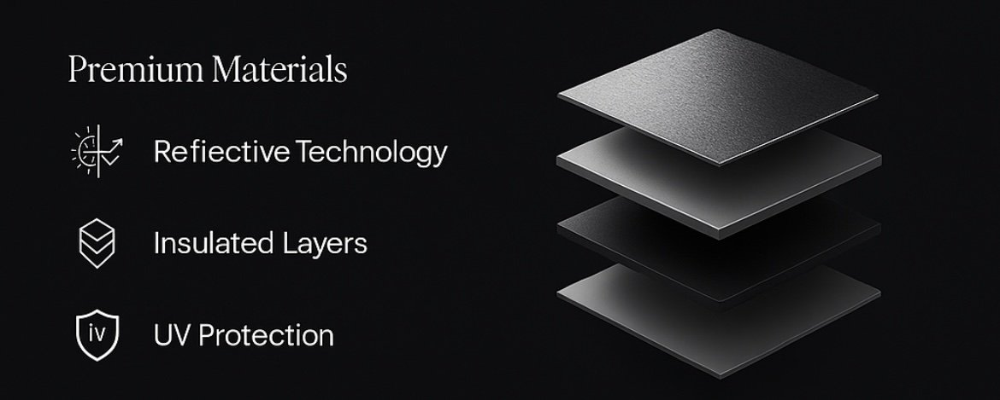

Shade Smarter.
Reflect the Heat.
Join the Waitlist

Reflective Technology

Insulated Layers

UV Protection
Premium Materials
A Shade Born from Real Heat
The idea for ReflectaShade came to me during a Sunday at church. I was sitting under a standard canopy, sweating in the heat, and I realized — this thing’s doing almost nothing. It felt hotter under the shade than out in the open. That’s when it hit me: what if a canopy could actually reflect the heat instead of trapping it?
With a baby girl on the way and being the provider for my family, I knew I had to chase this idea. I didn’t come from much — both of my parents didn’t finish high school, and I was the first in my family to graduate. I’ve always carried that pressure to be “the successful one,” and now I’m building something that can actually help people.
ReflectaShade is more than a product. It’s about comfort, protection, and presence. My time as an EMT showed me how dangerous the sun can really be — not just discomfort, but dehydration, burns, even long-term damage. Whether it’s first responders needing shade in disaster zones, or parents protecting their kids at a backyard BBQ, I want ReflectaShade to serve them all.
This brand is for everyone — built to feel premium, built to last, and built with heart.
Be the First to Know
Join our waitlist to get early access, exclusive offers, and product updates.